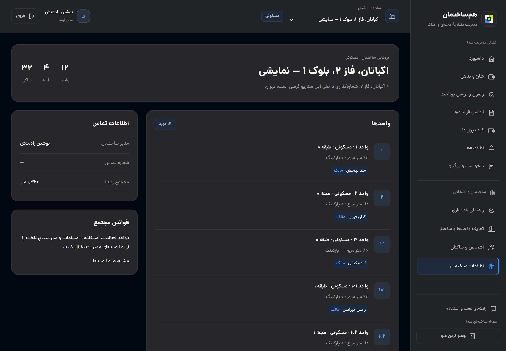
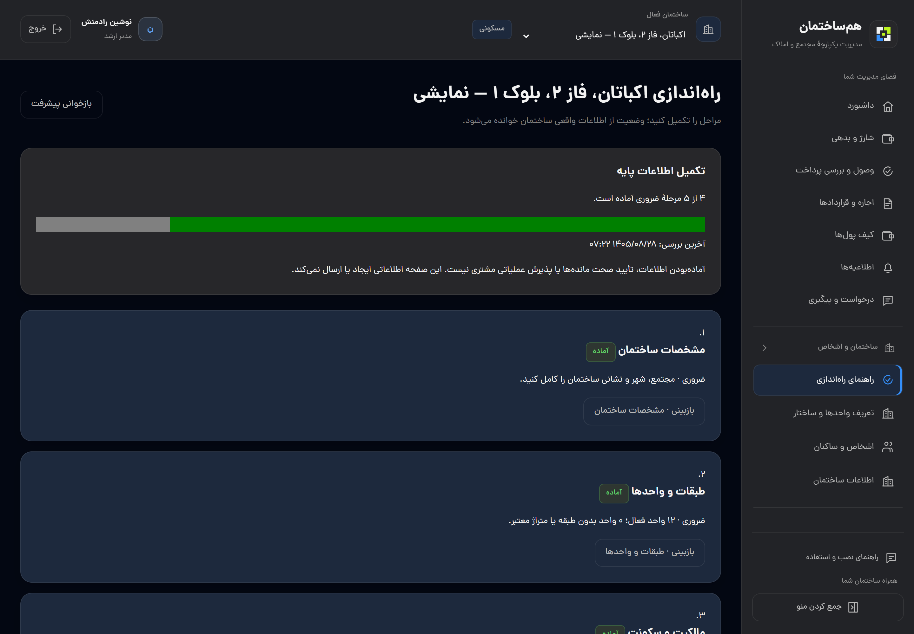
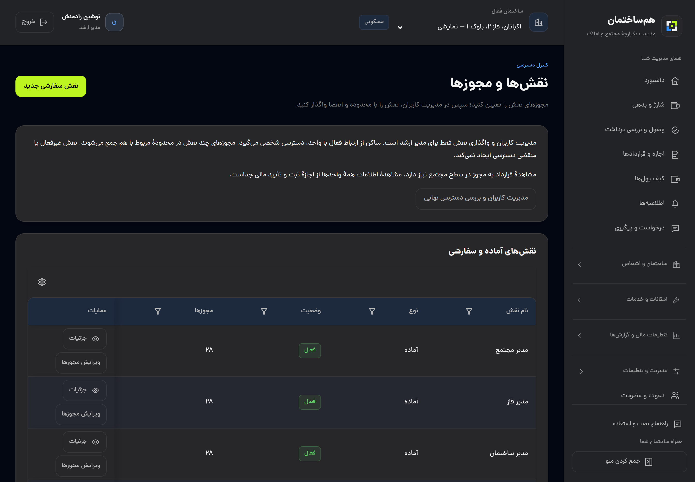
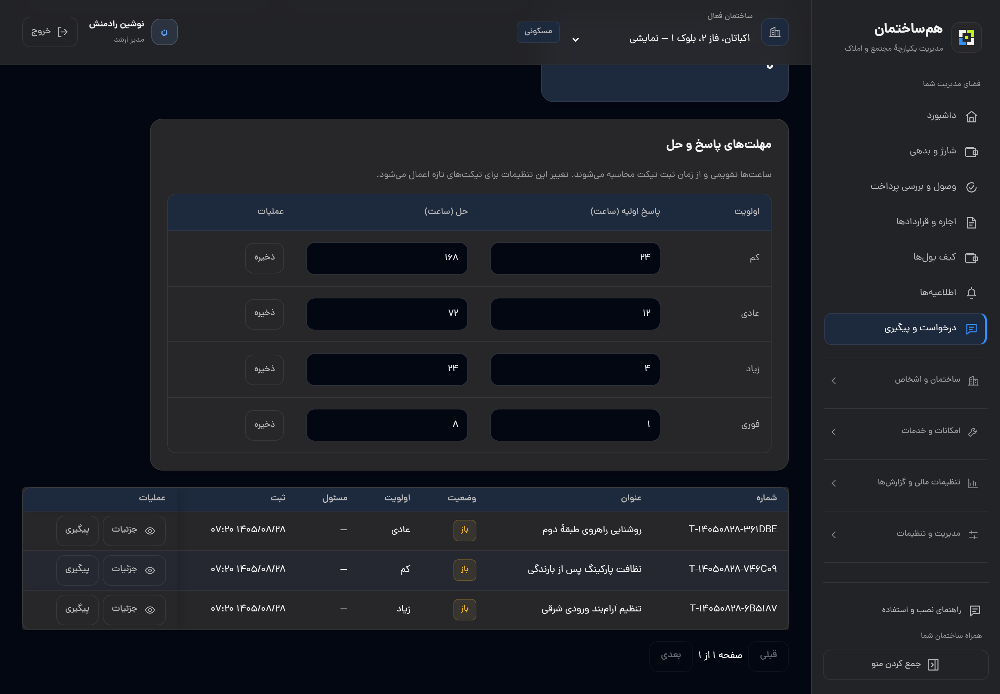
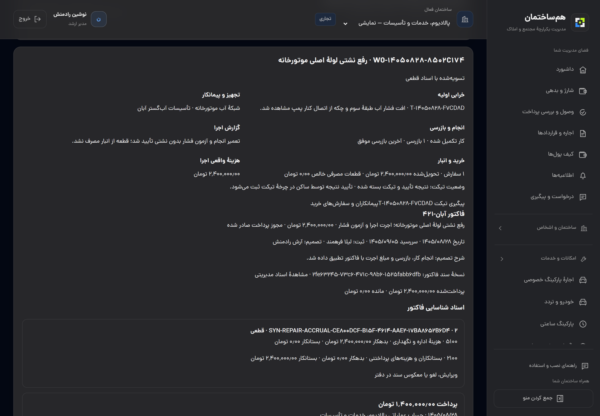

تصویر روشن ساختمان
وضعیت، مسئولیتها و مسیر تصمیمگیری
 همساختمانهمساختماناز مجتمع تا کار روزمره / معرفی تصویری / آبان ۱۴۰۵
همساختمانهمساختماناز مجتمع تا کار روزمره / معرفی تصویری / آبان ۱۴۰۵از شارژ و صورتحساب تا درخواست و نگهبانی؛ اکباتان را در ساختار مجتمع و فاز و بلوک، و پالادیوم را با نیازهای تجاری، منظم و قابل پیگیری ببینید.
وضعیت، مسئولیتها و مسیر تصمیمگیری
شارژ، دریافت، صندوق و دفتر حسابها
درخواست، مراجعه، مرسوله و خدمات ساختمان
همساختماننقشهٔ راهنما / معرفی تصویری / آبان ۱۴۰۵از نیاز روزمره شروع کنید و مسیر استفاده، تصویر و محدودیت هر قابلیت را ببینید.
از ساختار مجتمع تا کارهای هر مسئول؛ اطلاعات موردنیاز در مسیر مشخص قرار میگیرند.
دوره، دریافت، صندوق و دفتر حسابها؛ هر مبلغ به موضوع و سند مربوط متصل میماند.
مسئولیت بدهی، قرارداد، اطلاعیه و استفاده از امکانات ساختمان به افراد مرتبط میرسند.
درخواست، تعمیر و تجهیز با مسئول، وضعیت و سابقهٔ مرتبط نگهداری میشوند.
مهمان، مرسوله و گزارش نگهبانی در محدودهٔ مسئولیت همان ساختمان قرار میگیرند.
همساختماننمای روزانه و مسئولیتها / معرفی تصویری / آبان ۱۴۰۵مدیر ماندهٔ بدهی، دورهٔ شارژ و کارهای در انتظار را از داشبورد دنبال میکند. پیوند بخشهای مرتبط کمک میکند از مشاهدهٔ وضعیت به رسیدگی همان موضوع برسد.
 همساختماننمای روزانه و مسئولیتها / معرفی تصویری / آبان ۱۴۰۵
همساختماننمای روزانه و مسئولیتها / معرفی تصویری / آبان ۱۴۰۵در سناریوی اکباتان، مجتمع، فاز، بلوک یا ساختمان، طبقه و واحد در یک ساختار مرتبط قرار میگیرند. در پالادیوم، واحد تجاری به بهرهبردار، قرارداد، اجاره، ودیعه و تسویه متصل میشود تا محل و مسئولیت مالی هر پرونده روشن بماند.

همساختماننمای روزانه و مسئولیتها / معرفی تصویری / آبان ۱۴۰۵راهنمای راهاندازی نشان میدهد کدام اطلاعات ساختمان کامل و چه کاری باقی مانده است. مدیر از تعریف واحد و روش شارژ تا ثبت دریافت، مسیر شروع را دنبال میکند.

همساختماننمای روزانه و مسئولیتها / معرفی تصویری / آبان ۱۴۰۵مدیر، مسئول مالی و نگهبان اختیارهای متناسب با کارشان دارند. واگذاری دسترسی به محدودهٔ ساختمان و زمان مشخص متصل میشود تا همکاری و جانشینی قابل مدیریت باشد.

همساختمانشارژ و امور مالی / معرفی تصویری / آبان ۱۴۰۵مدیر دوره و روش تقسیم هزینه را انتخاب میکند و سهم واحدها محاسبه میشود. صورتحساب به شخص و بازهٔ مسئولیت متصل میماند تا با جابهجایی مالک یا مستأجر، بدهی قبلی بیدلیل به فرد تازه نسبت داده نشود.
 همساختمانشارژ و امور مالی / معرفی تصویری / آبان ۱۴۰۵
همساختمانشارژ و امور مالی / معرفی تصویری / آبان ۱۴۰۵ادعای پرداخت از تأیید مالی جداست. مسئول مجاز مبلغ، رسید و حساب صندوق یا بانک را بررسی میکند؛ دریافت تأییدشده در مانده اثر میگذارد و پرداخت جزئی باقیمانده را حفظ میکند. هزینهٔ پرداختنشده نیز از هزینهٔ تسویهشده تفکیک میشود.
 همساختمانشارژ و امور مالی / معرفی تصویری / آبان ۱۴۰۵
همساختمانشارژ و امور مالی / معرفی تصویری / آبان ۱۴۰۵مسئول مالی با کدینگ و سند چندردیفی کار میکند و گردش و ماندهٔ حسابها، بدهی، دریافت و هزینه را مرور میکند. قطعیکردن و اصلاح مستند و خروجیهای در دسترس، بررسی ارقام در جلسهٔ مدیریت را به سند مبنا متصل نگه میدارند.
 همساختمانقرارداد و ارتباط با ساکنان / معرفی تصویری / آبان ۱۴۰۵
همساختمانقرارداد و ارتباط با ساکنان / معرفی تصویری / آبان ۱۴۰۵امکانات مشترک با ظرفیت، زمان و قواعد لغو تعریف میشوند. رزرو و وضعیت ودیعه به پروندهٔ همان استفاده متصل میمانند تا تداخل و مبلغ قابل استرداد قابل بررسی باشد.
 همساختماندرخواست و نگهداری / معرفی تصویری / آبان ۱۴۰۵
همساختماندرخواست و نگهداری / معرفی تصویری / آبان ۱۴۰۵مدیر خبر را برای مخاطبان مربوط منتشر میکند و مشاهدهٔ آن در سامانه ثبت میشود. ساکن اکباتان یا بهرهبردار تجاری، درخواست را با موضوع مشخص ثبت میکند و مسئول رسیدگی، پاسخ، وضعیت و مهلت را در همان پرونده دنبال میکند.

همساختماندرخواست و نگهداری / معرفی تصویری / آبان ۱۴۰۵پروندهٔ تجهیز، ضمانت، سرویس و بازرسی به سابقهٔ تعمیر متصل میماند. مسئول تأسیسات پالادیوم، موضوع، پیمانکار، وضعیت، خرید، هزینه و مدرک پایان کار را دنبال میکند تا رسیدگی از گزارش مسئله تا تحویل روشن باشد.

همساختماننگهبانی و خدمات / معرفی تصویری / آبان ۱۴۰۵نگهبان مراجعه و وضعیت مجوز را در فضای عملیات ساختمان ثبت و بررسی میکند. ارتباط مراجعه با واحد و زمان مربوط، پیگیری ورود و خروج را منظمتر میکند.
 همساختماننگهبانی و خدمات / معرفی تصویری / آبان ۱۴۰۵
همساختماننگهبانی و خدمات / معرفی تصویری / آبان ۱۴۰۵مرسوله با واحد مربوط و وضعیت تحویل در پروندهٔ نگهبانی ثبت میشود. ثبتکننده و تحویلگیرنده میتوانند مراحل را دنبال کنند تا بستهٔ باز، تحویلشده یا برگشتی قابل تفکیک باشد.
 همساختماننگهبانی و خدمات / معرفی تصویری / آبان ۱۴۰۵
همساختماننگهبانی و خدمات / معرفی تصویری / آبان ۱۴۰۵ساکن، بهرهبردار و نگهبان میتوانند وضعیت و کارهای مجاز خود را در صفحهٔ متناسب با گوشی دنبال کنند. نمای همراه نگهبانی اکباتان، پیگیری مراجعه و خدمت را در همان محدودهٔ مسئولیت در دسترس میگذارد.
 همساختمانوضعیت واقعی / معرفی تصویری / آبان ۱۴۰۵
همساختمانوضعیت واقعی / معرفی تصویری / آبان ۱۴۰۵وجود مسیر نرمافزار، پذیرش محیط واقعی و خدمات قراردادی نتایج مستقلی هستند.
ساختار، شارژ و دریافت، دفتر حسابها، قرارداد، درخواست، تعمیر، نگهبانی و رزرو از مسیرهای موجود محصول معرفی شدهاند؛ عکس مرتبط در محدودیت هر مورد صریح است.
درگاه شارژ و اجارهٔ پایلوت شبیهسازیشده است. تحویل پیام، دستگاه، شبکه، پذیرش مشتری و خدمات مهاجرت نیازمند بررسی و توافق جدا هستند.
عکسها از رابط واقعی با سناریوهای ساختگی اکباتان و پالادیوم گرفته شدهاند؛ پذیرش محیط واقعی مستقل است. صرفهجویی عددی، مشتری واقعی یا تضمین عملیاتی ساخته نشده است.
همساختمانقدم بعدی / معرفی تصویری / آبان ۱۴۰۵در جلسهٔ معرفی، یک نمونهٔ ساختگی متناسب با ساختار ساختمان را مرور کنید؛ نقشها، روش تقسیم هزینه و گزارش موردنیاز را کنار هم بررسی کنید.
وضعیت، مسئولیتها و مسیر تصمیمگیری
شارژ، دریافت، صندوق و دفتر حسابها
درخواست، مراجعه، مرسوله و خدمات ساختمان
همساختماناز بلوکهای اکباتان تا بهرهبرداری پالادیوم / معرفی تصویری / آبان ۱۴۰۵در این معرفی، اکباتان الگوی مدیریت مسکونی و پالادیوم الگوی مدیریت تجاری است. اشخاص، واحدها، فعالیتها و ارقام، سناریوهای ساختگی نرمافزاریاند؛ این گزارش معرفی محلها بهعنوان مشتری یا نمایش دادهٔ واقعی مدیریت آنها نیست.
درخت مجتمع ← فاز ← بلوک یا ساختمان ← طبقه ← واحد، اطلاعات و مسئولیتها را منظم میکند. مدیر فاز میتواند محدودهٔ فاز خود و مدیر بلوک، همان بلوک را دنبال کند؛ دسترسی به سایر محدودهها تابع مجوز است.
نامگذاری محدودهها متناسب با سازمان مجموعه انجام میشود. در نسخهٔ فعلی، ناحیه با عنوان مجتمع یا فاز مدل میشود؛ منطقه، یک سطح مستقلِ اضافه بر زنجیرهٔ مجتمع و فاز نیست.
واحد تجاری، بهرهبردار، قرارداد، ودیعه، هزینهٔ مشترک و وصول، در پروندههای مرتبط قرار میگیرند. مدیر میتواند تعهد، دریافت، تعمیر و گزارش مالی بخش مربوط را کنار هم بررسی کند.
همساختمانرشد همراه با نیاز واقعی مجتمعها / معرفی تصویری / آبان ۱۴۰۵هستهٔ مدیریت و گردشهای مالی و عملیاتی در نسخهٔ آغازین قابل بررسیاند. مرحلههای بعد با بازخورد مدیران، ساکنان و بهرهبرداران اولویتبندی میشوند.
سادهترشدن شروع کار، گزارشهای موردنیاز مجموعه و عمق گردشهای مدیریتی، با تجربهٔ استفادهکنندگان دنبال میشود.
راهاندازی و ارزیابی عملی بله، درگاه پرداخت و خدمات وابسته به مجوز و محیط مقصد، از گامهای بعدی عرضه است؛ مسیر نرمافزاری موجود بهتنهایی پذیرش سرویس واقعی نیست.
QR، اتصال تجهیزات و امکانات پیشرفتهٔ نگهبانی و مدیریت، متناسب با پروتکل، سختافزار و نیاز پایلوت بعدی بررسی و تکمیل خواهند شد.
این موارد مسیر توسعه و پذیرشاند؛ زمان قطعی یا فعالبودن آنها در دمو ادعا نمیشود.
همساختمانچرا همساختمان را بررسی کنیم؟ / معرفی تصویری / آبان ۱۴۰۵برای انتخاب نرمافزار، یک دورهٔ شارژ یا یک درخواست واقعی را از ابتدا تا گزارش دنبال کنید. این فهرست نقاط قوت قابل بررسی همساختمان را برای مقایسه با گزینههای داخلی و خارجی نشان میدهد.
مجتمع، فاز، بلوک یا ساختمان، طبقه و واحد به هم متصلاند؛ مناسب بررسی مدیریت مجموعههایی با ساختار گسترده مانند سناریوی اکباتان.
شارژ و سکونت در کنار بهرهبرداری تجاری، قرارداد و ودیعه پوشش داده میشوند؛ سناریوهای اکباتان و پالادیوم دو کاربرد متفاوت را روشن میکنند.
صورتحساب، رسید، تأیید دریافت، صندوق، هزینه و گزارش به رکورد مبنا متصلاند تا وضعیت پرداخت و مانده از هم جدا نمانند.
درخواست، تجهیز، تعمیر و خرید میتوانند به مسئول، مدرک و هزینهٔ مربوط وصل شوند؛ مدیر از گزارش مسئله تا تحویل کار را دنبال میکند.
همساختمانمزیتها؛ ارتباط و منابع مقایسه / معرفی تصویری / آبان ۱۴۰۵ادامهٔ معیارهای مقایسهٔ همساختمان.
برای اعلانها از مسیر سرویس داخلی بله استفاده شده است. دریافت پیام به تنظیم ربات و اتصال حساب وابسته است؛ ارسال پیامک واقعی در این معرفی وعده داده نمیشود.
بازخورد دربارهٔ نیاز مجتمع، پشتیبانی و اولویت قابلیتها از مسیرهای تماس همین گزارش دریافت میشود.
رقیب داخلی وجود دارد؛ برای نمونه همسا و همسادهها در حوزهٔ مدیریت ساختمان فعالیت دارند و Buildium نمونهٔ خارجی است. این فهرست ادعای برتری آزمودهشده بر همهٔ آنها یا نبود محصول مشابه نیست.
همساختماننسخهٔ دمو را خودتان تجربه کنید / معرفی تصویری / آبان ۱۴۰۵در دمو میتوانید مسیرهای همساختمان را بررسی کنید. دادهٔ آماده برای سناریوی آزمایش شما در نظر گرفته نشده است؛ مجتمع، واحدها و اطلاعات ساختگی موردنیاز بررسی را خودتان وارد کنید.
ورود به دمو ↗ hamsakhteman-pilot-20261117.onrender.comبرای دریافت دسترسی آزمایشی با توسعهدهنده تماس بگیرید. برای آزمایش، اطلاعات ساختگی وارد کنید و پیام یا پرداخت واقعی انجام ندهید. ارتباط در تلگرام.
همساختمانارتباط و بازخورد / معرفی تصویری / آبان ۱۴۰۵
توسعهدهندهٔ نرمافزار همساختمان
ایتا و بله: با شمارهٔ ۰۹۹۱۸۷۹۰۹۶۹ در دسترس هستم.
این نسخه، آغاز مسیر توسعهٔ محصول است و با تجربهٔ کاربران رشد میکند. اگر هنگام استفاده با خطا روبهرو شدید یا پیشنهاد و نقدی داشتید، مشتاق شنیدن تجربهٔ شما هستم؛ بازخوردتان به بهبود و اولویتبندی نسخههای بعد کمک میکند.
همساختمانپشتیبانی و شفافیت / معرفی تصویری / آبان ۱۴۰۵برای رسیدگی به مسئله و بررسی وضعیت مالی و عملیات مجتمع، مسیرهای مشخصی وجود دارد.
درخواست، پاسخ و وضعیت رسیدگی در یک مسیر نگهداری میشوند. برای راهاندازی، نیازهای مجتمع و روش پشتیبانی توافق میشوند؛ تماس مستقیم توسعهدهنده نیز در همین معرفی آمده است.
ثبت رخداد و شناسهٔ پیگیری به پیدا کردن علت مسئله کمک میکنند. نام صفحه، زمان و مراحل تکرار مشکل را بفرستید؛ اطلاعات خصوصی ساکنان و جزئیات حساب را در پیام عمومی قرار ندهید.
سهم شارژ، مسئول بدهی، دریافت تأییدشده و مانده به هم مرتبطاند. پرداخت جزئی یا رد رسید، وضعیت مشخص خود را دارد تا «ثبت رسید» با «وصول قطعی» اشتباه نشود.
همساختمانپشتیبانی و شفافیت / معرفی تصویری / آبان ۱۴۰۵برای رسیدگی به مسئله و بررسی وضعیت مالی و عملیات مجتمع، مسیرهای مشخصی وجود دارد.
اصلاح سند، هزینه، خرید و تعمیر با پرونده و دلیل مربوط قابل پیگیری میمانند. گزارش مدیریت از منشأ مبلغ جدا نیست و ارقام سناریوهای مختلف بدون ارتباط با هم جمع نمیشوند.
مدیر مجتمع، مدیر فاز یا بلوک، حسابدار، ساکن و نگهبان محدودهٔ یکسان ندارند. هر فرد باید تنها داده و عملیات مجاز مسئولیت خود را ببیند؛ مشاهده و اختیار ثبت نیز قابل تفکیکاند.
مسیر بله برای ارتباطات پیاده شده و دریافت اعلان به تنظیم ربات و اتصال حساب وابسته است. پیش از استفادهٔ واقعی، گردشها و سرویسها با نیاز مسکونی یا تجاری همان مجموعه مرور میشوند.